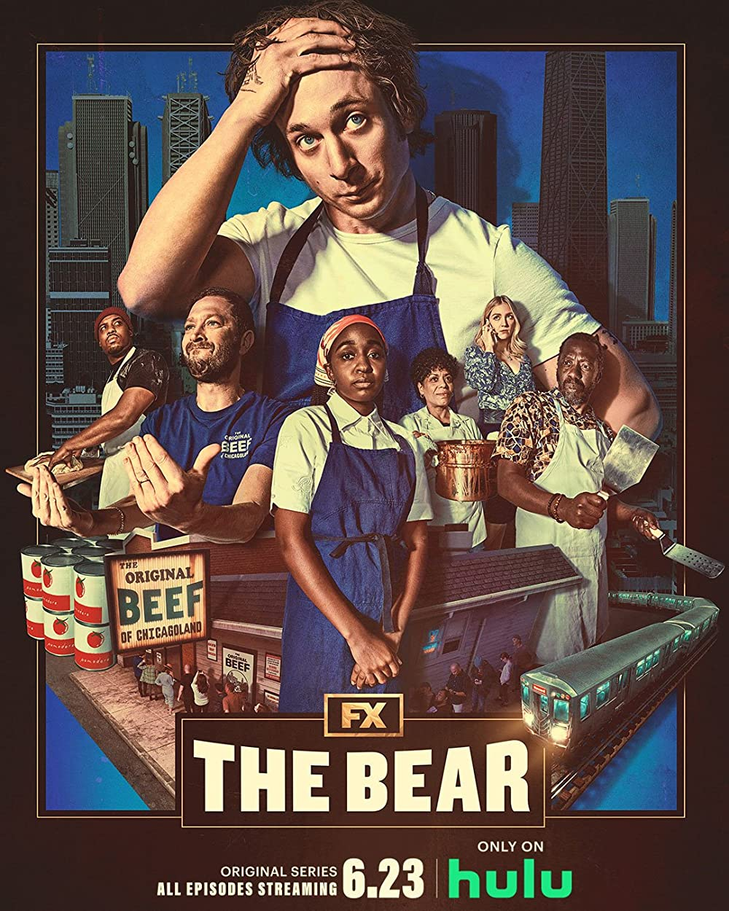
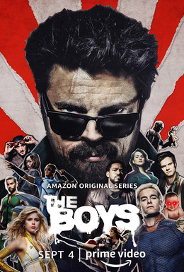
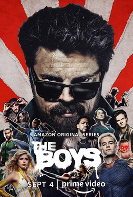
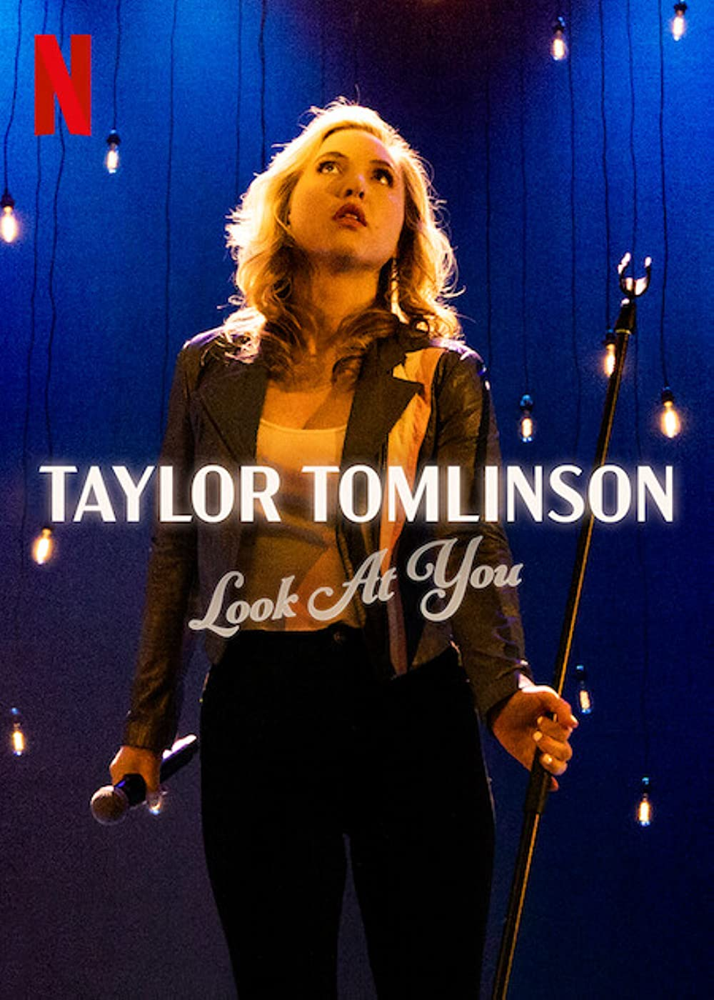
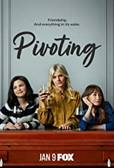
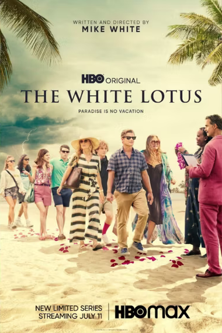

Favorite Sitcoms
This includes older, "expired" ones.
üèÜ Most unhinged: Don't Trust the B in Apartment 23
ü§™ Honorable Mention: Insatiable (2018)
Favorite Non-Sitcoms
üçø Honorable Mention: GLOW, Orange is the New Black
Husband Shows
 

Lists:
Here to laugh? I used to find a lot of great TV shows by using search terms like "weird" and "offbeat". These are what I thought were the . Sublist of that: shows that put when we did. Or maybe you're looking for someone to or sit down, as long as they tell you some jokes! See all that and more in the .
Okay, it doesn't have to be funny to be good cinematography. mean to convey an emotion to you, and they do it well.
The Ultimatum: Queer Love (2023)
 |
|
Class of '07 (2023)
 |
|
The Bear (2022)
 |
Well of course you're going to watch Lip in his non-spinoff new series! And it will be worth it. Have you ever seen a TV show decide to show you what anxiety feels like? The Bear has a huge thing in common with Single Drunk Female: while having nothing to do with the older show, |
Look at You: Taylor Tomlinson (2022)
|  |
Taylor Tomlinson is SO FUNNY! We love a therapy bitch. If anyone's still sayingLooking at you, Reboot S01E03 that woke people aren't funny ÿØŸÖŸëŸéŸáŸÖ ÿ™ŸÇŸäŸÑ, this is what you show them. Banger after Ÿàÿ±ÿß banger without resorting to placeholder punchlines. She's hilarious. It's even funnier if you watch her 2020 show after this. You'll go OH. YES. SHE WAS LIKE THAT. IT MAKES SENSE. lmao. “That's not fair to Kevin!” |
كيرة والجن (٢٠٢٢)
المكتب (٢٠٢٢)
Uncoupled (2022)
Kevin Can F*** Himself (2019)
|
|
Sweet Tooth (2021)
Ginny & Georgia (2021 - season 1 is enough)
 |
If TV shows were sisters, G&G would be the anorexic and musically gifted youngest child after Suburgatory and Insatiable. |
Mythic Quest (2020 - )
|
omg. how to even begin describing my favorite TV show of all time (currently)? You don't even have to be a fan of that dumb Philly show to enjoy this one. Mythic Quest is funny and cute and new. After S01E7: read Tears of the Anaren. |
The Boys (2019 - )
The Umbrella Academy (2019 - )
Otherhood (2019)
|
|
Ramy (2019 - uhh... season 1 only)
Pose (2018 - 2021)
Insatiable (2018 - 2019)
Go and See (1948, restored 2018)
 |
|
The Marvelous Mrs. Maisel (2017 - 2022)
|
|
Speechless (2016 - 2018)
|
|
The Mick (2017 - 2018)
|
|
HAPPY! (2017 - 2019)
GLOW (2017 - 2019)
The Good Place (2016 - 2020)
Preacher (2016 - 2019)
Superstore (2015 - 2020)
F is for Family (2015 - 2021)
Inside Out (2015)
Au Service de la France (2015 - 2018)
|
|
Jane the Virgin (2014 - 2019)
Rick and Morty (2013 - )
Brooklyn Nine-Nine (2013 - 2021)
|
|
Orange is the New Black (2013 - 2019)
Don't Trust the B in Apartment 23 (2012-2014)
|
|
Suburgatory (2011 - 2014)
Franklin and Bash (2011 - 2014)
Better Off Ted (2009 - 2010)
The Emperor's New Groove (2000)
Expired Shows
The Mindy Project (2012-2017)
Happy Endings (2011 - 2013)
Community (2009 - 2015)
Cougar Town (2009 - 2015)
How I Met Your Mother (2005 - 2014)
Blah, Blah.
Interview with the Vampire (2022 - )
Single Drunk Female (2022)
 |
Hey, Sophia Black D'Elia! Her character here is a perfect continuation of the one she played in The Mick, even though it's a totally different person. I can't speak for Where Sabrina was a rich kid with liberal views, a general apathy about her life, and a fear of going to college, Samantha is a 28 year old alcoholic who has to attempt a fresh start because she pretty much used to be... Sabrina. Even the tone of the new show (light drama, muted comedy) shifted from the old one (wild sitcom) in a way that feels, to me, like Sabrina herself took the control away from Mick. <3 |
Pivoting (2022)
|  |
From: things I've found while stalking Eliza Coupe from Happy Endings. The pilot episode didn't hook me, but I blew through S01E03-S01E10 on a Friday. Pivoting has birthed one, no, two new categories on this webpage! This is a great ridiculous sitcom that kind of follows Friends in that... it's about friends and we laugh while we follow their lives. I won't tell you what the second category is yet. Omg, it's Garrett from Superstore. |
The White Lotus (2021)
|  |
Why... why is this so popular? I'll admit it is strangely compelling. I just had to finish it. But... only because... well... ? :/ I did learn something from Tanya, though: I fill my own cup! Two scenes I enjoyed the most:"He could have still been butch, dad." |
The Other Two (2019 - 2021)
American Gods (2017 - 2021)
Powerless (2017)
Younger (2015 - Oh God Please Stop)
Mixology (2014)
Selfie (2014)
Manhattan Love Story (2014)
Actually, No
If I wasn't someone who appreciated knowing what's inside books and movies even when I don't like them, I'd call these a waste of my goddamn time.